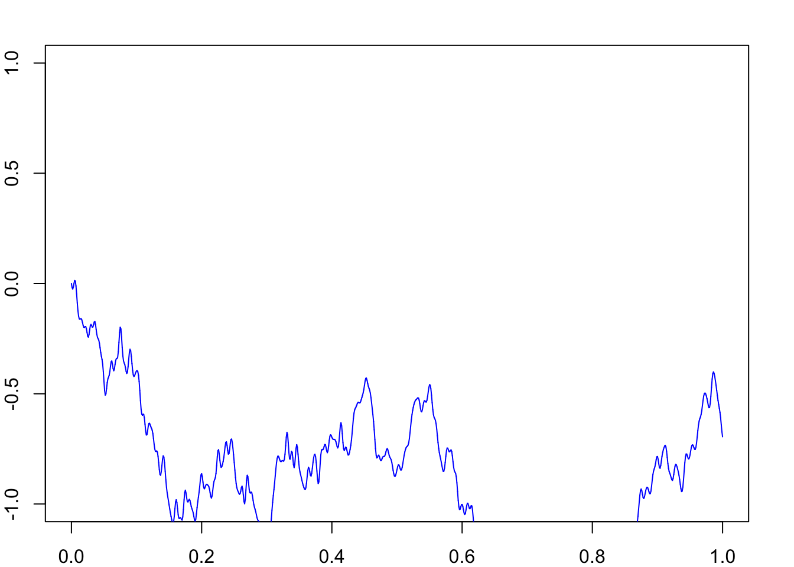

lambda_t <- function(t) { 5 + 3 * sin(pi * t) } # example intensity function
T <- 1
lambda_max <- 8 # an upper bound for the intensity
# Step 2: Simulate a homogeneous Poisson process with rate λ_max
set.seed(403) # Ensuring reproducibility
N <- rpois(1, lambda_max * T)
candidate_times <- sort(runif(N, 0, T))
# Step 3: Thin the events
accepted_times <- candidate_times[sapply(candidate_times, function(t) {
U <- runif(1)
U < lambda_t(t) / lambda_max
})]
# Building the plot arrays correctly
times <- c(0, accepted_times, T)
steps <- 0:(length(accepted_times)+1)
# Plot the simulated Poisson process
plot(times, steps, type='s', xlab='Time', ylab='Number of Events',
main='Nonhomogeneous Poisson Process Simulation')CourseSimulatioinExamples
Simulation-Markov Sequence
Stationary Distribution
Poisson Process
MCMC
set.seed(403-560)
g=function(x) exp(x-x^2/2-exp(x))
fn <- function(x) {
con=integrate(g, lower = -Inf, upper = Inf )$value
return(g(x)/con)}
mcX=0.5
for(i in 1:10000){
x.temp=rnorm(1,mcX[i],1)
u=runif(1)
p.acc=min(1,g(x.temp)/g(mcX[i]))
if(u<p.acc) mcX=c(mcX,x.temp)
if(u>=p.acc) mcX=c(mcX,mcX[i])}
hist(mcX, freq = FALSE,ylim=c(0,0.6))
curve(fn, -5, 5, add = TRUE, col = "red")Brownian Motion
rm(list=ls())
#Simulating Geometric Brownian motion (GMB)
tau <- 1 #time to expiry
N <- 1000 #number of sub intervals
dt <- tau/N #length of each time sub interval
time <- seq(from=0, to=tau, by=dt) #time moments in which we simulate the process
length(time) #it should be N+1[1] 1001mu <- 0.05 #GBM parameter 1
sigma <- 0.9 #GBM parameter 2
X0 <- 10 #initial condition
#simulate 1 Geometric Brownian motion path
Z <- rnorm(N, mean = 0, sd = 1) #standard normal sample of N elements
dW <- Z*sqrt(dt) #Brownian motion increments
W <- c(0, cumsum(dW)) #Brownian motion at each time instant N+1 elements
#Analytic solution
X_analytic <- numeric(N+1) #vector of zeros, N+1 elements
X_analytic[1] <- X0 #first element of X_analytic is X0. with the for loop we find the other N elements
for(i in 2:length(X_analytic)){
X_analytic[i] <- X_analytic[1]*exp(mu - 0.5*sigma^2*i*dt + sigma*W[i-1])
}
#plot X against time
plot(time, X_analytic, type = "l", main = "GBM path with analytical solution",
xlab = expression("t"[i]), ylab = expression("W"[t[i]]))#Euler-Maruyama scheme
X_EM <- numeric(N+1) #vector of zeros, N+1 elements
X_EM[1] <- X0 #first element of X_EM is X0. with the for loop we find the other N elements
for(i in 2:length(X_EM)){
X_EM[i] <- X_EM[i-1] + mu*X_EM[i-1]*dt + sigma*dW[i-1]
}
#plot X against time
plot(time, X_EM, type = "l", main = "GBM path with Euler-Maruyama scheme",
xlab = expression("t"[i]), ylab = expression("W"[t[i]]))#plot W against time
matplot(time, cbind(X_analytic, X_EM), type = "l", main = "GBM",
xlab = expression("t"[i]), ylab = expression("X"[t[i]]))Example 16.9. Let \(Z_0, Z_1, \ldots\), be a series of independent standard normal random variables. The infinite series \[ B(t)=\frac{t}{\sqrt{\pi}} Z_0+\sqrt{\frac{2}{\pi}} \sum_{m=1}^{\infty} \frac{\sin (m t)}{m} Z_m, \quad 0 \leq t \leq 1, \] is a Brownian motion for \(0 \leq t \leq 1\). Try to simulate a Brownian motion stochastic process, at least approximately, by using finite sums of the form \[ B_N(t)=\frac{t}{\sqrt{\pi}} Z_0+\sqrt{\frac{2}{\pi}} \sum_{m=1}^N \frac{\sin (m t)}{m} Z_m, \quad 0 \leq t \leq 1 \]
z1=rnorm(10000);
B1=function(t, N=1000)
t*z1[N+1]/sqrt(pi)+sqrt(2/pi)*sum(z1[1:N]*sin(t*c(1:N))/(c(1:N)))
par(mar = c(0, 0, 0, 0)+2)
plot(1,1,col="white",xlim=c(0,1),ylim=c(-1,1 ) )
y=0
for(i in 1:1000){
y1=B1(i/1000);
segments((i-1)/1000,y,i/1000,y1,col="blue")
y=y1;
}